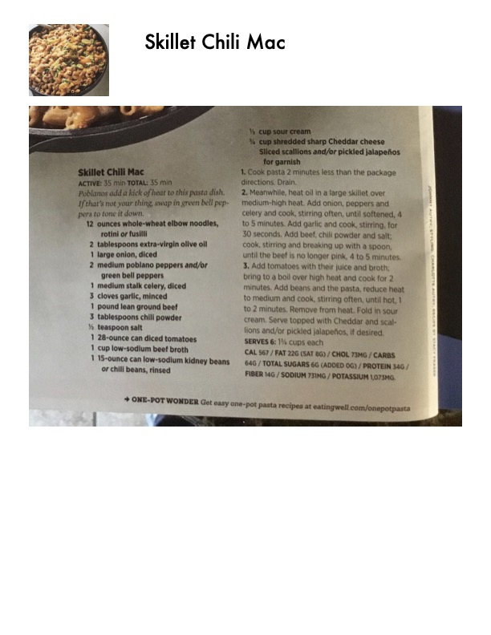

Skillet Chili Mac

Original cookbook page 61
Poblanos add a kick of heat to this pasta dish. If that's not your thing, swap in green bell peppers to tone it down.
Total: 35 min
Ingredients
- 12 ounces whole-wheat elbow noodles, rotini or fusilli
- 2 tablespoons extra-virgin olive oil
- 1 large onion, diced
- 2 medium poblano peppers and/or green bell peppers
- 1 medium stalk celery, diced
- 3 cloves garlic, minced
- 1 pound lean ground beef
- 3 tablespoons chili powder
- ½ teaspoon salt
- 1 28-ounce can diced tomatoes
- 1 cup low-sodium beef broth
- 1 15-ounce can low-sodium kidney beans or chili beans, rinsed
- ½ cup sour cream
- ¾ cup shredded sharp Cheddar cheese
- Sliced scallions and/or pickled jalapeños for garnish
Instructions
- Cook pasta 2 minutes less than the package directions. Drain.
- Meanwhile, heat oil in a large skillet over medium-high heat. Add onion, peppers and celery and cook, stirring often, until softened, 4 to 5 minutes. Add garlic and cook, stirring, for 30 seconds. Add beef, chili powder and salt; cook, stirring and breaking up with a spoon, until the beef is no longer pink, 4 to 5 minutes.
- Add tomatoes with their juice and broth; bring to a boil over high heat and cook for 2 minutes. Add beans and the pasta, reduce heat to medium and cook, stirring often, until hot, 1 to 2 minutes. Remove from heat. Fold in sour cream. Serve topped with Cheddar and scallions and/or pickled jalapeños, if desired.
Recipe #61 from collection